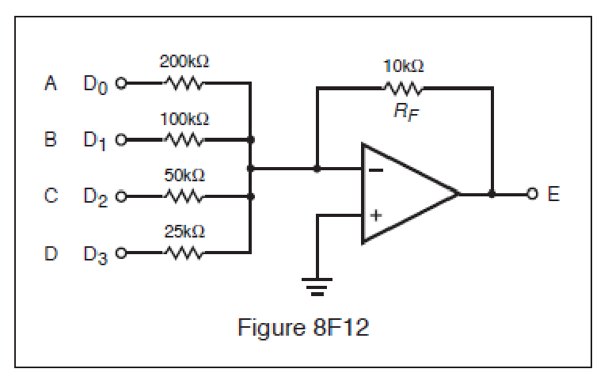

All 42 FCC GROL questions for 8F Installation, Maintenance & Repair with the correct answers marked, from the official current FCC question pool. Test yourself with the free practice exam.
8-44F1
When you examine the RADAR you notice that there is no target video in the center of the CRT. The blank spot gets smaller in diameter as you increase the range scale. What operator front panel control could be misadjusted?
A. TUNE.
B. Sensitivity Time Control (STC). ✓
C. Anti-Clutter Rain (ACR).
D. False Target Elimination (FTE).
8-44F2
Range rings on the PPI indicator are oval in shape. Which circuit would you suspect is faulty?
A. Timing circuit.
B. Video amplifier circuit.
C. Range marker circuit.
D. Sweep generation circuit. ✓
8-44F3
What would be the most likely defective area when there is no target video in the center of the CRT and the blank spot gets smaller in diameter as your range scale is increased?
A. The TR (TRL) Cell. ✓
B. The local oscillator is misadjusted.
C. Video amplifier circuit.
D. The IF amplifier circuit.
8-44F4
While the vessel is docked the presentation of the pier is distorted near the center of the PPI with the pier appearing to bend in a concave fashion. This is a primary indication of what?
A. The deflection coils need adjusting.
B. The centering magnets at the CRT neck need adjusting.
C. The waveguide compensation delay line needs adjusting. ✓
D. The CRT filaments are weakening.
8-44F5
In a RADAR using digital video processing, a bright, wide ring appears at a fixed distance from the center of the display on all digital ranges. The transmitter is operating normally. What receiver circuit would you suspect is causing the problem?
A. VRM circuit.
B. Video storage RAM or shift register. ✓
C. Range ring generator.
D. EBL circuit.
8-44F6
The raster scan RADAR display has missing video in a rectangular block on the screen. Where is the most likely problem area?
A. Horizontal sweep circuit.
B. Power supply.
C. Memory area failure. ✓
D. Vertical blanking pulse.
8-45F1
A circuit card in a RADAR system has just been replaced with a spare card. You notice the voltage level at point E in Fig. 8F12 is negative 4.75 volts when the inputs are all at 5 volts. The problem is:

A. The 25 K resistor is open.
B. The 100 K resistor has been mistakenly replaced with a 50 K resistor.
C. The op amp is at the rail voltage.
D. The 50 K resistor has been mistakenly replaced with a 25 K resistor. ✓
8-45F2
A defective crystal in the AFC section will cause:
A. No serious problems.
B. Bright flashing pie sections on the PPI. ✓
C. Spiking on the PPI.
D. Vertical spikes that constantly move across the screen.
8-45F3
The RADAR display has sectors of solid video (spoking). What would be the first thing to check?
A. Antenna information circuits failure.
B. Frequency of raster scan.
C. For interference from nearby ships. ✓
D. Constant velocity of antenna rotation.
8-45F4
In the circuit contained in Fig. 8F12, there are 5 volts present at points B and C, and there are zero volts present at points A and D. What is the voltage at point E?
A. -1.5 Volts. ✓
B. 3.75 Volts.
C. 23.75 Volts.
D. 4.5 Volts.
8-45F5
If the TR tube malfunctions:
A. The transmitter might be damaged.
B. The receiver might be damaged. ✓
C. The klystron might be damaged.
D. Magnetron current will increase.
8-45F6
The indicated distance from your own vessel to a lighthouse is found to be in error. What circuit would you suspect?
A. Range ring oscillator. ✓
B. Video amplifier.
C. STC circuit.
D. FTC circuit.
8-46F1
Silicon crystals are used in RADAR mixer and detector stages. Using an ohmmeter, how might a crystal be checked to determine if it is functional?
A. Its resistance should be the same in both directions.
B. Its resistance should be low in one direction and high in the opposite direction. ✓
C. Its resistance cannot be checked with a dc ohmmeter because the crystal acts as a rectifier.
D. It would be more appropriate to use a VTVM and measure the voltage drop across the crystal.
8-46F2
In a RADAR unit, if the crystal mixer becomes defective, replace the:
A. Crystal only.
B. The crystal and the ATR tube.
C. The crystal and the TR tube. ✓
D. The crystal and the klystron.
8-46F3
An increase in magnetron current that coincides with a decrease in power output is an indication of what?
A. The pulse length decreasing.
B. A high SWR.
C. A high magnetron heater voltage.
D. The external magnet weakening. ✓
8-46F4
It is reported that the RADAR is not receiving small targets. The most likely causes are:
A. Magnetron, IF amplifier, or receiver tuning. ✓
B. PFN, crystals, or processor memory.
C. Crystals, local oscillator tuning, or power supply.
D. Fuse blown, IF amp, or video processor.
8-46F5
A high magnetron current indicates a/an:
A. Defective AFC crystal.
B. Increase in duty cycle.
C. Defective external magnetic field. ✓
D. High standing wave ratio (SWR).
8-46F6
Low or no mixer current could be caused by:
A. Local oscillator frequency misadjustment.
B. TR cell failure.
C. Mixer diode degradation.
D. All of the above. ✓
8-47F1
If the magnetron is allowed to operate without the magnetic field in place:
A. Its output will be somewhat distorted.
B. It will quickly destroy itself from excessive current flow. ✓
C. Its frequency will change slightly.
D. Nothing serious will happen.
8-47F2
Targets displayed on the RADAR display are not on the same bearing as their visual bearing. What should you first suspect?
A. A bad reed relay in the antenna pedestal.
B. A sweep length misadjustment.
C. One phase of the yoke assembly is open.
D. Incorrect antenna position information. ✓
8-47F3
Loss of distant targets during and immediately after wet weather indicates:
A. A leak in waveguide or rotary joint. ✓
B. High atmospheric absorption.
C. Dirt or soot on the rotary joint.
D. High humidity in the transmitter causing power supply loading.
8-47F4
In a marine RADAR set, a high VSWR is indicated at the magnetron output. The waveguide and rotary joint appear to be functioning properly. What component may be malfunctioning?
A. The magnetron
B. The waveform generator
C. The STC circuit
D. The waveguide array termination ✓
8-47F5
On a vessel with two RADARs, one has a different range indication on a specific target than the other. How would you determine which RADAR is incorrect?
A. Check the sweep and timing circuits of both indicators for correct readings. ✓
B. Triangulate target using the GPS and visual bearings.
C. Check antenna parallax.
D. Use the average of the two indications and adjust both for that amount.
8-47F6
An increase in the deflection on the magnetron current meter could likely be caused by:
A. Insufficient pulse amplitude from the modulator.
B. Too high a B1 level on the magnetron.
C. A decrease of the magnetic field strength. ✓
D. A lower duty cycle, as from 0.0003 to 0.0002.
8-48F1
A thick layer of rust and corrosion on the surface of the parabolic dish will have what effect?
A. No noticeable effect.
B. Scatter and absorption of RADAR waves.
C. Decrease in performance, especially for weak targets. ✓
D. Slightly out of focus PPI scope.
8-48F2
The echo box is used for:
A. Testing the wavelength of the incoming echo signal.
B. Testing and tuning of the RADAR unit by providing artificial targets. ✓
C. Amplification of the echo signal.
D. Detection of the echo pulses.
8-48F3
What should be done to the interior surface of a waveguide in order to minimize signal loss?
A. Fill it with nitrogen gas.
B. Paint it with nonconductive paint to prevent rust.
C. Keep it as clean as possible. ✓
D. Fill it with a high-grade electrical oil.
8-48F4
Which of the following is the most useful instrument for RADAR servicing?
A. Oscilloscope. ✓
B. Frequency Counter.
C. R. F. Wattmeter.
D. Audio generator.
8-48F5
A non-magnetic screwdriver should always be used when replacing what component?
A. TR tube.
B. Mixer.
C. Video amplifier.
D. Magnetron. ✓
8-48F6
What kind of display would indicate water in the waveguide?
A. Spoking.
B. Large circular rings near the center. ✓
C. Loss of range rings.
D. Wider than normal targets.
8-49F1
Why is coaxial cable often used for S-band installations instead of a waveguide?
A. Losses can be kept reasonable at S-band frequencies and the installation cost is lower. ✓
B. A waveguide will not support the power density required for modern S-band RADAR transmitters.
C. S-band waveguide flanges show too much leakage and are unsafe for use near personnel.
D. Dimensions for S-band waveguide do not permit a rugged enough installation for use by ships at sea.
8-49F2
RADAR interference to a communications receiver is eliminated by:
A. Not operating other devices when RADAR is in use.
B. Properly grounding, bonding, and shielding all units. ✓
C. Using a high pass filter on the power line.
D. Using a link coupling.
8-49F3
Why should long horizontal runs of waveguide be avoided?
A. They must be insulated to prevent electric shock.
B. To prevent damage from shipboard personnel.
C. To minimize reception of horizontally polarized returns.
D. To prevent accumulation of condensation. ✓
8-49F4
Long horizontal sections of waveguides are not desirable because:
A. Moisture can accumulate in the waveguide. ✓
B. The waveguide can sag, causing loss of signal.
C. Excessive standing waves can occur.
D. The polarization of the signal might shift.
8-49F5
In a RADAR system, waveguides should be installed:
A. Slightly bent for maximum gain.
B. As straight as possible to reduce distortion. ✓
C. At 90 degree angles to improve resonance.
D. As long as possible for system flexibility.
8-49F6
What is the most important factor to consider in locating the antenna?
A. Allow the shortest cable/waveguide run.
B. Maximum height for best long range operation.
C. The antenna is in a location that is not shadowed by other structures. ✓
D. Easy access for maintenance.
8-50F1
Choose the most correct statement with respect to component damage from electrostatic discharge:
A. ESD damage occurs primarily in passive components which are easily identified and replaced.
B. ESD damage occurs primarily in active components which are easily identified and replaced.
C. The technician will feel a small static shock and recognize that ESD damage has occurred to the circuit.
D. ESD damage may cause immediate circuit failures, but may also cause failures much later at times when the RADAR set is critically needed. ✓
8-50F2
Before testing a RADAR transmitter, it would be a good idea to:
A. Make sure no one is on the deck.
B. Make sure the magnetron’s magnetic field is far away from the magnetron.
C. Make sure there are no explosives or flammable cargo being loaded. ✓
D. Make sure the Coast Guard has been notified.
8-50F3
While making repairs or adjustments to RADAR units:
A. Wear fire-retardant clothing.
B. Discharge all high-voltage capacitors to ground. ✓
C. Maintain the filament voltage.
D. Reduce the magnetron voltage.
8-50F4
While removing a CRT from its operating casing, it is a good idea to:
A. Discharge the first anode.
B. Test the second anode with your fingertip.
C. Wear gloves and goggles. ✓
D. Set it down on a hard surface.
8-50F5
If a CRT is dropped:
A. Most likely nothing will happen because they are built with durability in mind.
B. It might go out of calibration.
C. The phosphor might break loose.
D. It might implode, causing damage to workers and equipment. ✓
8-50F6
Prior to removing, servicing or making measurements on any solid state circuit boards from the RADAR set, the operator should ensure that:
A. The proper work surfaces and ESD grounding straps are in place to prevent damage to the boards from electrostatic discharge. ✓
B. The waveguide is detached from the antenna to prevent radiation.
C. The magnetic field is present to prevent over-current damage or overheating from occurring in the magnetron.
D. Only non-conductive tools and devices are used.